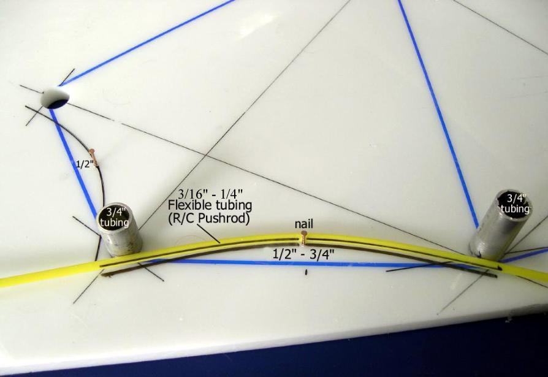

| Cross Sections | Menu Previous Page Next Page |
|  | |
|
Concave Cutouts - To accommodate the concave nature of the skin while in the water, the cross sections are cut to that shape. Between the keel and chine, the cutout is 1/2" to 3/4". Between the chine and gunwale, it's 1/2". Place a small nail half way between the stringers, and insert small sections of 3/4" tubing in the stringer holes. Place the 3/16 " or 1/4" flexible tubing as shown in the photo above, and mark the curve with a permanent marker pen. These lines will serve as a guide for cutting out the cross section. |
|